TransMeet 사용 가이드
영어 회의를 실시간 한글 자막으로 듣고, 한글로 쓴 내 의견을 영어 음성으로 전하고, 끝나면 요약과 공유용 회의 페이지까지 받아 보세요. 처음 쓰는 분도 이 문서만 따라 하면 바로 회의에 쓸 수 있습니다.
01TransMeet이란?
브라우저에서 바로 쓰는 실시간 회의 통역·기록 도구입니다. 설치할 프로그램은 없습니다.
준비물
- 브라우저: PC의 Chrome 또는 Edge를 권장합니다. 화상회의 소리(시스템 오디오)를 받으려면 PC 브라우저가 필요합니다.
- 마이크 권한: 처음 녹음할 때 브라우저가 마이크 사용을 묻습니다. 허용을 눌러 주세요.
- 계정: 초대받은 사람만 쓸 수 있습니다. 관리자에게 받은 이메일과 임시 비밀번호를 준비하세요.
02로그인 · 비밀번호 찾기
초대 메일로 받은 이메일과 임시 비밀번호로 로그인합니다. 회원가입 메뉴는 없으며, 계정이 없다면 관리자에게 발급을 요청하세요.
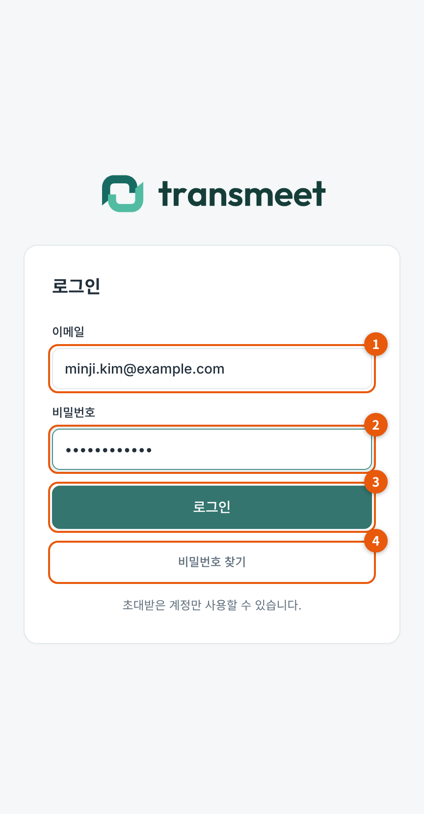
- 1이메일 — 초대받은 이메일 주소
- 2비밀번호 — 처음이라면 초대 메일의 임시 비밀번호
- 3로그인
- 4비밀번호 찾기 — 비밀번호를 잊었을 때 (아래 설명)
처음 로그인할 때
"새 비밀번호 설정" 화면이 나오면 새 비밀번호와 새 비밀번호 확인에 같은 값(8자 이상)을 넣고 비밀번호 설정을 누르세요. 바로 로그인됩니다.
비밀번호를 잊었을 때
로그인 화면 → 비밀번호 찾기 → 인증 코드 받기
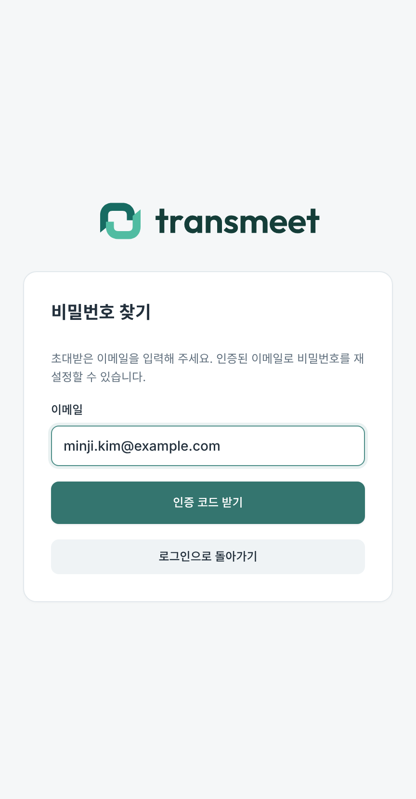
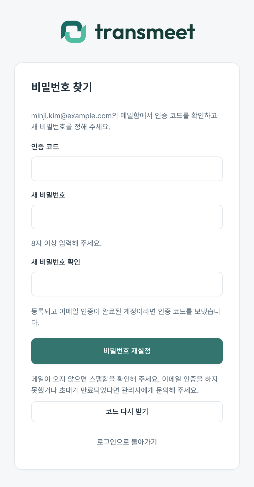
- 비밀번호 찾기 → 이메일 입력 → 인증 코드 받기등록되어 있고 이메일 인증을 마친 계정이면 메일로 인증 코드가 옵니다.
- 인증 코드 · 새 비밀번호 · 새 비밀번호 확인 입력새 비밀번호는 8자 이상입니다(특수문자는 필수가 아닙니다).
- 비밀번호 재설정"비밀번호가 재설정되었습니다" 안내가 나오면 새 비밀번호로 로그인합니다.
- 코드를 다시 받으려면 코드 다시 받기, 그만두려면 로그인으로 돌아가기.
- 메일이 안 오면 스팸함을 확인하세요. 이메일 인증을 안 했거나 초대가 만료됐다면 관리자에게 문의하세요.
03화면 한눈에 보기
PC 화면은 왼쪽 회의 목록, 가운데 대화, 오른쪽 회의 도구(메모·요약·회의 페이지) 세 부분입니다.
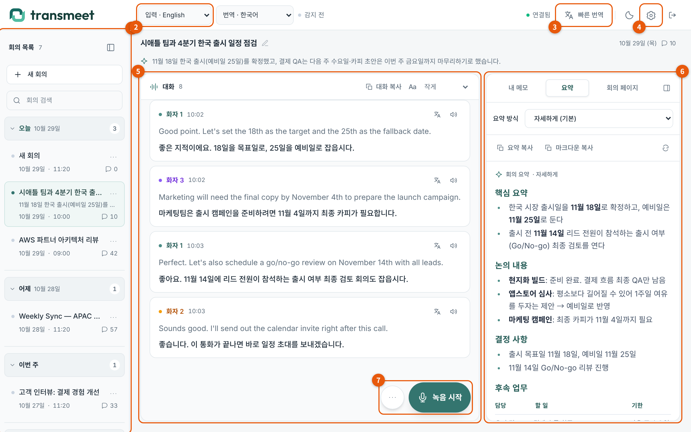
- 1회의 목록 — 새 회의 만들기, 회의 검색, 날짜별 회의 기록. 자세히
- 2언어 선택 — 듣는 말의 언어(입력)와 번역할 언어를 고릅니다. 오른쪽에 실제로 감지된 언어가 표시됩니다. 자세히
- 3빠른 번역 — 회의와 별개로 문장 하나를 즉석에서 번역합니다. 자세히
- 4설정(톱니바퀴) — 오디오 입력, 번역 모델, 테마, 요약 양식, 계정. 옆의 달 아이콘은 다크 모드, 그 옆은 로그아웃입니다. 자세히
- 5대화 — 인식된 발언과 번역이 말풍선으로 쌓입니다. 자세히
- 6회의 도구 — 내 메모 · 요약 · 회의 페이지 탭. 메모 · 요약 · 페이지
- 7녹음 버튼 — 🎙 녹음 시작과 ⋯ 더보기(회의 종료·녹음 다운로드). 자세히
헤더의 연결 상태
| 표시 | 뜻 |
|---|---|
| ● 연결됨 | 서버와 실시간 연결이 정상입니다. (아직 녹음 중이라는 뜻은 아닙니다.) |
| ● 연결 중 | 연결을 기다리는 중입니다. 잠시 기다리세요. |
| ● 녹음 중 | 소리를 받아 인식하고 있습니다. |
| ● 연결 끊김 | 네트워크나 로그인 상태를 확인하고 새로고침하세요. |
패널 크기 조절
- 회의 목록과 회의 도구의 경계선을 드래그하면 너비를 바꿀 수 있습니다. 바꾼 너비는 기억됩니다.
- 회의 도구 오른쪽 위 ◫ 아이콘으로 패널을 접으면 대화가 넓어집니다. 다시 열려면 제목 줄 오른쪽 ◫ 메모 · 요약을 누르세요.
- 회의 목록도 ◫ 아이콘으로 좁은 막대 형태로 접을 수 있습니다.
045분 빠른 시작
처음이라면 이 순서대로 해 보세요. 영어 화상회의를 듣는 가장 흔한 상황 기준입니다.
- 새 회의 만들기왼쪽 위 ＋ 새 회의를 누릅니다. (앱을 열면 빈 새 회의가 자동으로 하나 준비되어 있기도 합니다.) 녹음 전에 제목을 보고 원하는 회의인지 확인하면 기록이 섞이지 않습니다.
- 어떤 소리를 들을지 정하기대면 회의나 스피커로 듣는다면 기본값 마이크 그대로. Zoom·Chime·Teams 소리를 이어폰으로 들으면서 받으려면 설정 → 오디오 입력에서 시스템 오디오 또는 둘 다를 고릅니다. (방법)
- 언어 확인헤더에서 입력 · English, 번역 · 한국어인지 확인합니다. 기본값이 이 조합입니다.
- 녹음 시작오른쪽 아래 🎙 녹음 시작을 누르고 마이크 권한을 허용합니다. 말풍선에 영어 원문과 한글 번역이 실시간으로 나타납니다.
- 하고 싶은 말은 내 메모로직접 영어로 말하기 어려우면 내 메모에 한글로 적고 보내세요. 영어 음성으로 읽어 줍니다.
- 끝나면 회의 종료빨간 ■ 회의 종료를 누르면 녹음이 정리되고 요약과 회의 페이지가 자동으로 만들어집니다. 메일 받기를 켜 두었다면 요약 메일도 옵니다.
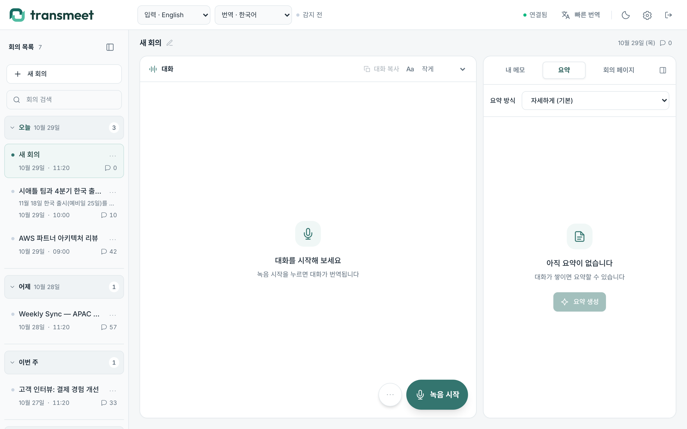
05회의 목록
지금까지의 회의가 오늘 · 어제 · 이번 주 · 지난 주, 그 이전은 월별로 묶여 최신순으로 보입니다.
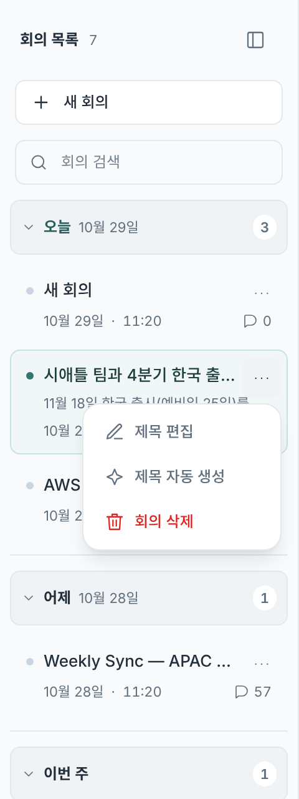
할 수 있는 일
- ＋ 새 회의 — 새 회의 기록을 만듭니다.
- 회의 검색 — 제목의 일부를 입력해 찾습니다. 오른쪽 ✕로 검색어를 지우고 전체 목록으로 돌아갑니다.
- 그룹 접기 — "오늘", "어제" 같은 머리글을 누르면 접히고 펼쳐집니다. 오른쪽 숫자는 회의 개수입니다.
- 회의 열기 — 항목을 누르면 그 회의의 대화·메모·요약이 열립니다. 제목 아래 회색 글은 한 줄 요약, 💬 숫자는 발언 수입니다.
⋯ 작업 메뉴
- 제목 편집 — 제목을 직접 고칩니다.
- 제목 자동 생성 — 대화 내용을 읽고 AI가 제목을 지어 줍니다. 대화가 있어야 의미 있는 제목이 나옵니다.
- 회의 삭제 — 확인 화면에서 제목을 확인한 뒤 삭제. 복원할 수 없으니 필요한 내용은 먼저 복사하거나 녹음을 내려받으세요.
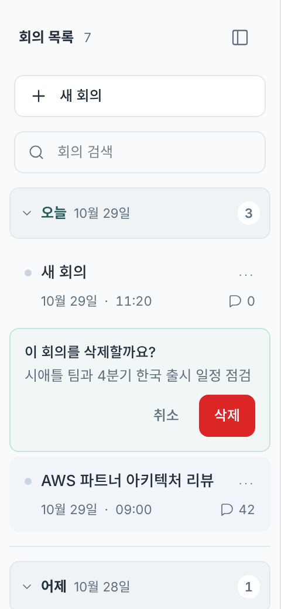
회의 제목과 한 줄 요약
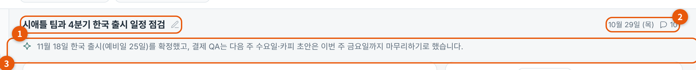
- 1제목 편집(연필 아이콘) — 누르면 입력칸으로 바뀝니다. Enter 또는 ✓로 저장, Esc 또는 ✕로 취소.
- 2회의 날짜와 발언 수
- 3✨ 한 줄 요약 — 회의 전체의 핵심과 결론을 한 문장으로 보여 줍니다. 새 대화가 20개 쌓일 때마다 자동으로 갱신되며, 오른쪽 상세 요약이나 자동 요약 주기와는 따로 동작합니다.
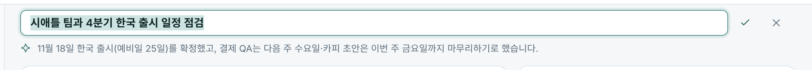
06언어 선택
헤더의 두 선택창으로 무슨 언어를 듣는지와 무슨 언어로 읽을지를 따로 고릅니다.
| 하고 싶은 일 | 입력 (음성 언어) | 번역 (번역 대상) |
|---|---|---|
| 영어 회의를 한국어로 읽기 | 입력 · English 기본 | 번역 · 한국어 기본 |
| 한국어 발표를 영어로 읽기 | 입력 · 한국어 | 번역 · English |
| 한·영이 번갈아 나오는 회의 | 입력 · 자동 | 번역 · 반대편 |
| 섞인 말을 전부 한국어로 읽기 | 입력 · 자동 | 번역 · 한국어 |
- 반대편은 감지한 음성이 영어면 한국어로, 한국어면 영어로 번역한다는 뜻입니다.
- 번역 · 한국어를 고르면 이미 한국어인 발언은 다시 쓰지 않고 그대로 둡니다.
- 오른쪽의 감지 전 / 감지: English / 감지: 한국어는 실제로 인식된 언어입니다. 고른 입력 언어와 다르게 나오면 화자가 다른 언어로 말한 것입니다.
- 한 언어만 쓰는 회의라면 자동보다 그 언어로 고정하는 것이 더 정확합니다.
07녹음하기
대화 패널 오른쪽 아래의 둥근 버튼들로 녹음을 조작합니다.
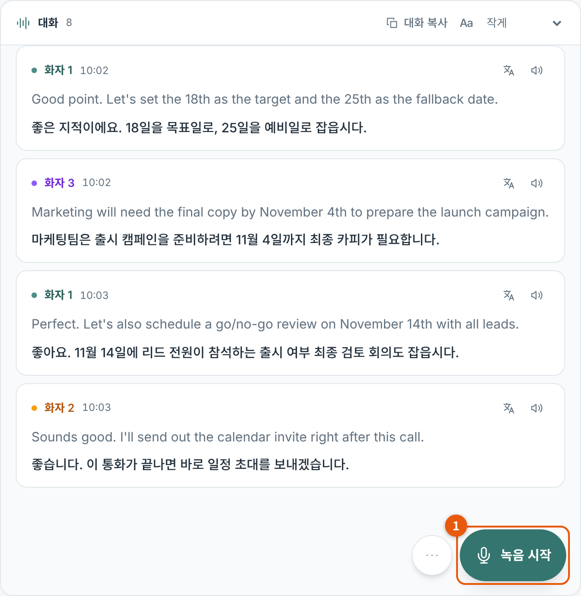
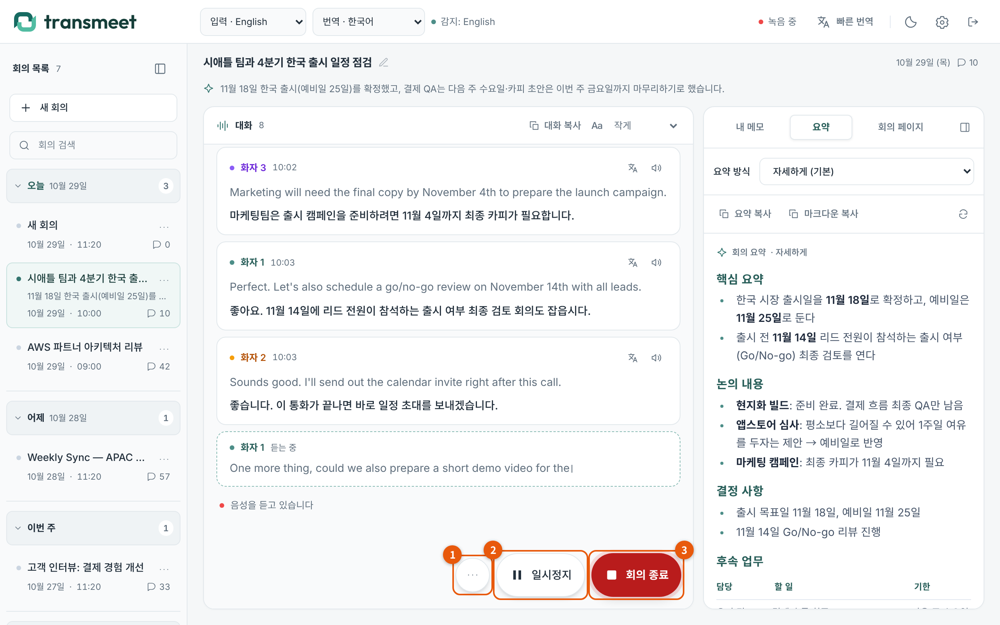
- 1⋯ 더보기 — 현재 오디오 입력(마이크/시스템)을 보여 주고, 녹음 다운로드를 할 수 있습니다. 녹음 전에는 여기에 회의 종료도 있습니다.
- 2⏸ 일시정지 — 녹음만 잠시 멈춥니다. 회의는 계속됩니다. 쉬는 시간, 사적인 대화, 입력 장치를 바꿀 때 쓰세요.
- 3■ 회의 종료 — 녹음을 마무리하고 회의를 정리합니다. 종료하면 일어나는 일
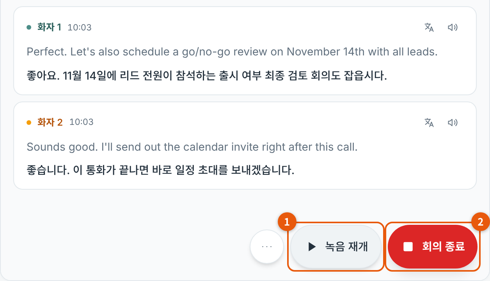
화상회의 소리 받기 (시스템 오디오)
이어폰으로 듣는 Zoom·Chime·Teams 소리를 마이크를 거치지 않고 깨끗하게 받는 방법입니다. PC의 Chrome·Edge에서만 됩니다.
| 오디오 입력 | 받는 소리 | 이럴 때 |
|---|---|---|
| 마이크 기본 | 기기 마이크가 듣는 주변 소리 | 대면 회의, 스피커로 듣는 회의, 내 목소리로 테스트 |
| 시스템 오디오 | 공유한 화면·탭에서 나오는 소리 | 컴퓨터로 듣는 온라인 회의·발표 |
| 둘 다 | 마이크 + 시스템 오디오 | 상대방 소리와 내 발언을 함께 기록 |
- 설정 → 음성 · 번역 → 오디오 입력시스템 오디오 또는 둘 다를 고르고 설정을 닫습니다.
- 녹음 시작브라우저의 화면 공유 창이 뜹니다.
- 공유할 대상 선택 + 오디오 공유 켜기회의 앱이 브라우저 탭이면 그 탭을, 데스크톱 앱이면 전체 화면을 고르고, 아래쪽 "오디오 공유"(탭 오디오/시스템 오디오 공유) 스위치를 반드시 켠 뒤 공유를 누릅니다.
- 짧게 확인말풍선에 원문이 들어오는지 확인합니다. 안 들어오면 일시정지 후 다른 공유 대상을 고르거나 마이크로 바꿔 다시 시작하세요.
녹음 다운로드
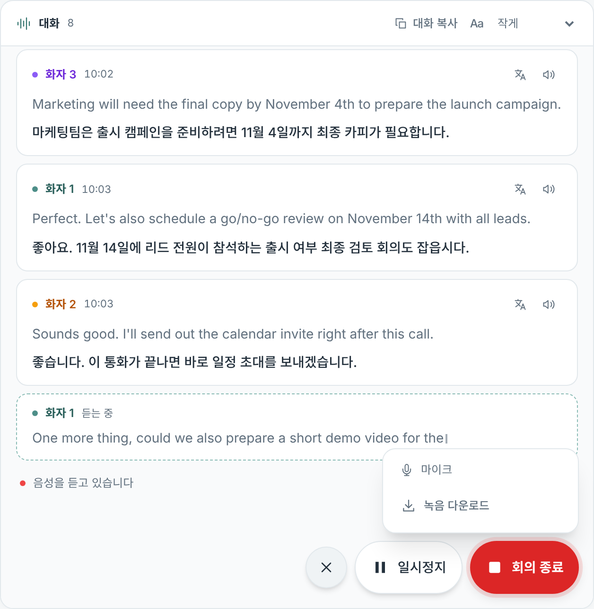
회의 중이든 끝난 뒤든 ⋯ → 녹음 다운로드를 누르면 지금까지 녹음된 소리를 MP3 파일로 받습니다. 파일을 준비하는 동안 "파일 준비 중…"이 표시되고, 끝나면 브라우저가 내려받습니다.
준비에 실패하면 알림 내용을 확인하고 다시 누르세요. 서버 연결과 저장된 녹음이 있어야 합니다.
GPU 음성 엔진 준비 (Qwen3-ASR · Nemotron · 스트리밍 Whisper)
고급 설정에서 이 엔진들을 고르면 비용 절약을 위해 평소에는 대기 상태(GPU 0대)일 수 있습니다. 이때 녹음 버튼이 🎙 엔진 준비로 바뀝니다.

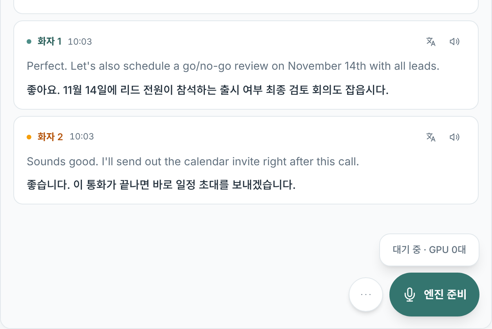
| 엔진 상태 | 할 일 |
|---|---|
| 대기 중 · GPU 0대 | 엔진 준비(또는 고급 설정의 엔진 준비하기)를 누릅니다. |
| 엔진 준비 중 | 기다립니다. 몇 분 걸릴 수 있습니다. |
| 사용 가능 | 녹음 시작을 누릅니다. 오래 쓰지 않으면 자동으로 대기 상태가 됩니다. |
| 엔진 설정 필요 / 상태 확인 필요 | 반복되면 Transcribe로 바꾸거나 관리자에게 알려 주세요. |
08대화 패널
인식된 발언이 말풍선으로 쌓입니다. 위 줄(회색)은 원문, 아래 줄(진한 글씨)은 번역입니다.
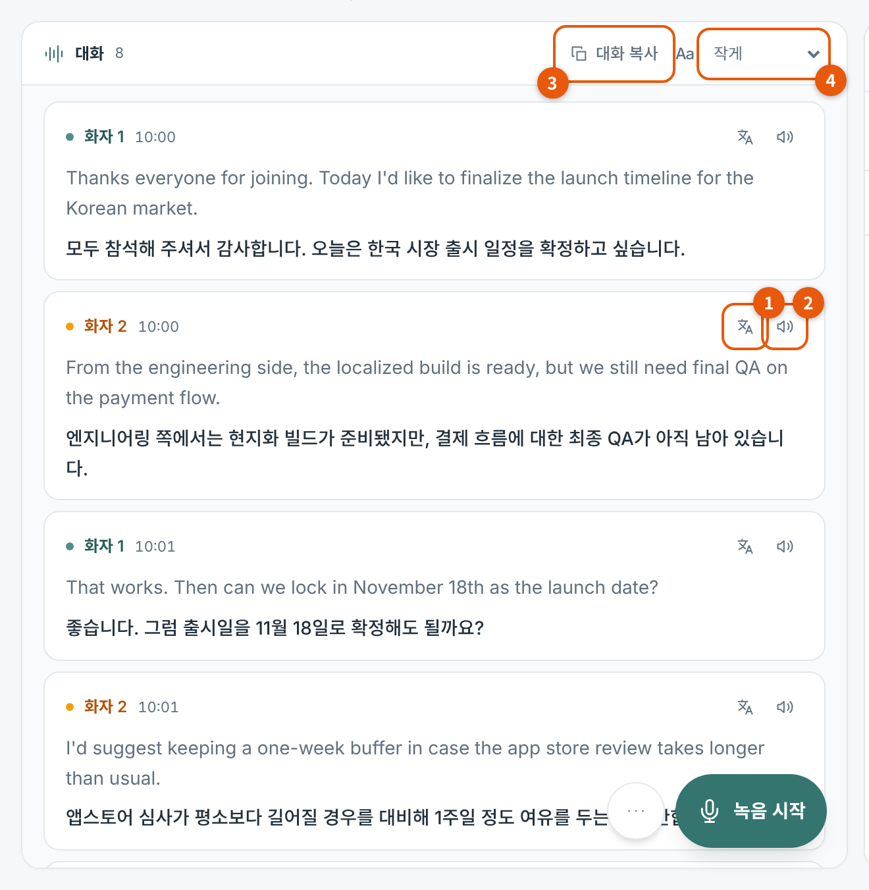
- 1번역 / 다시 번역(文A 아이콘) — 이 말풍선만 현재 번역 대상으로 다시 번역합니다. 번역이 어색하거나 언어 설정을 바꾼 뒤에 쓰세요. "직접 번역" 모드에서는 이 버튼을 눌러야 번역됩니다.
- 2원문 음성 재생(스피커 아이콘) — 원문 글자를 음성으로 읽어 줍니다(당시 녹음을 트는 버튼은 아닙니다). 놓친 문장을 다시 들을 때 편리합니다. 재생 중 다시 누르면 멈춥니다.
- 3대화 복사 — 화자 발언의 원문 전체를 시간·화자와 함께 복사합니다. 번역문과 내 메모는 들어가지 않습니다.
- 4글자 크기(Aa) — 작게 · 보통 · 크게 · 아주 크게. 화면 공유로 자막을 보여 줄 때 크게 키우면 좋습니다.
- 말풍선 위의 화자 1 · 화자 2 · 화자 3은 목소리로 자동 구분한 화자입니다. 실제 이름을 등록하는 기능은 아니며, 구분 정확도는 음성 인식 엔진에 따라 다릅니다.
- 녹음 중 가장 최근 말풍선에는 실시간 표시가 붙고, "듣는 중"이나 깜빡이는 커서가 보이면 아직 내용이 갱신되는 중입니다.
- 위로 스크롤해 이전 대화를 읽는 동안에는 자동 스크롤이 멈추고, 맨 아래로 내려오면 다시 따라갑니다.
- 말이 끊긴 뒤 일정 시간(기본 10초)이 지나거나, 한 말풍선이 정해진 문장 수(기본 3문장)를 넘으면 새 말풍선이 생깁니다. 고급 설정에서 바꿀 수 있습니다.
09내 메모 — 한글로 쓰면 영어 음성으로
오른쪽 회의 도구 → 내 메모
내가 하고 싶은 말을 한글로 적으면 영어로 번역하고 음성으로 읽어 줍니다. 내 말도 나로 회의 기록에 함께 남습니다.
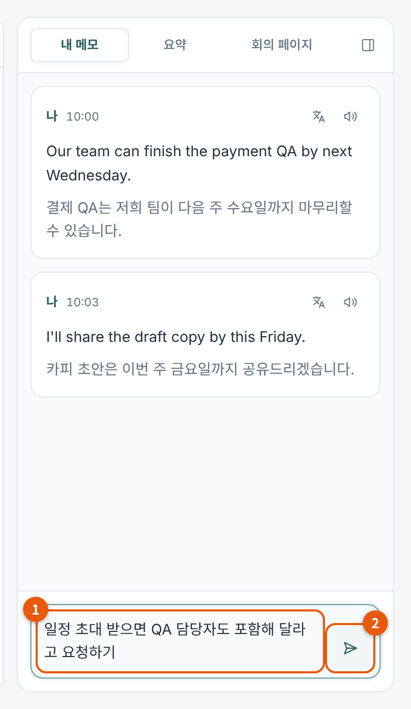
- 1입력창 — "한글로 입력하면 영어로 번역됩니다". Enter로 보내고, Shift+Enter로 줄을 바꿉니다.
- 2보내기(종이비행기) — 번역 후 영어 음성이 자동 재생됩니다. 재생 중에는 ■ 버튼으로 멈출 수 있습니다.
- 보낸 메모 카드에는 영어 번역과 내가 쓴 한글이 함께 보입니다.
- 카드의 文A 아이콘은 다시 번역, 스피커 아이콘은 번역 음성 재생입니다.
- 음성을 먼저 확인하고 싶다면 설정 → 번역 음성 자동 재생을 끄세요. 꺼도 카드의 스피커로 재생할 수 있습니다.
회의 내용에 대해 질문하기
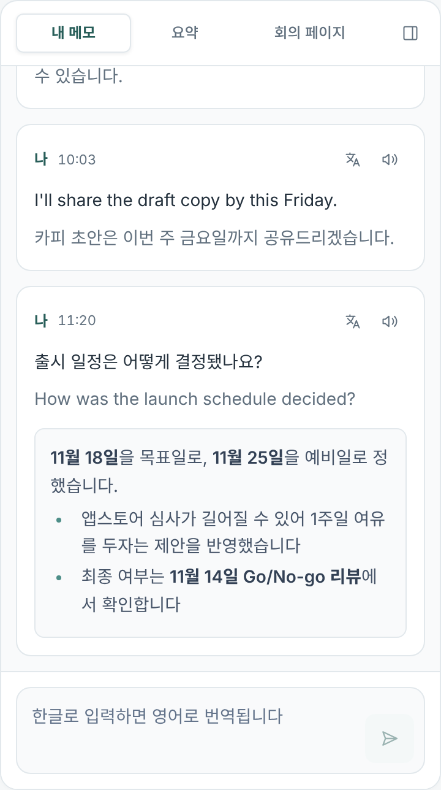
서버에 연결된 상태에서 내 메모로 "출시 일정은 어떻게 결정됐나요?"처럼 질문을 보내면, 번역 아래에 지금까지의 대화를 근거로 한 한국어 답변이 표시됩니다. 회의 중 놓친 내용을 확인할 때 유용합니다.
- 답변은 현재 대화만 근거로 합니다. 대화에 없는 담당자·일정은 원문을 확인하세요.
- 질문도 메모처럼 영어로 번역되어 음성으로 재생됩니다. 소리 내어 읽히지 않게 하려면 먼저 자동 재생을 끄세요.
- 답변은 화면에 보이는 보조 정보입니다. 남겨 둘 내용은 따로 복사해 두세요.
10빠른 번역
헤더 오른쪽 → 文A 빠른 번역
회의 기록과 상관없이 단어나 문장 하나를 바로 번역합니다. 작은 화면에서는 언어 아이콘만 보일 수 있습니다.
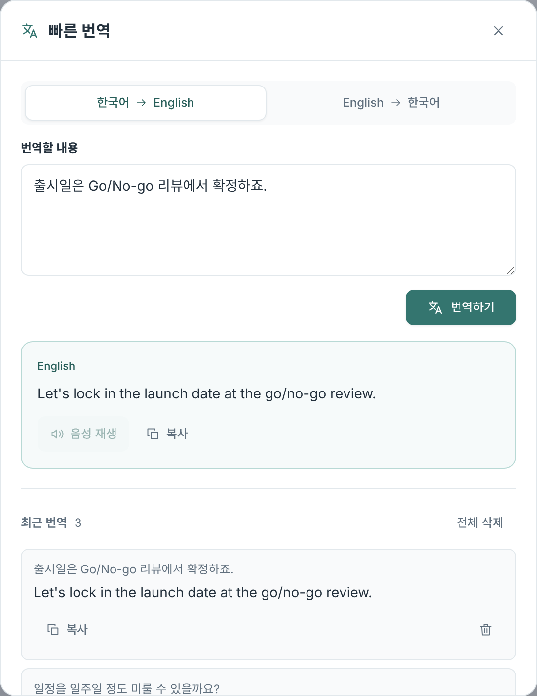
- 방향 고르기위쪽 한국어 → English / English → 한국어 중 하나를 누릅니다. 헤더의 회의 언어 설정과는 별개입니다.
- 번역할 내용 입력입력 후 Enter 또는 文A 번역하기. 줄바꿈은 Shift+Enter.
- 결과 활용결과 아래 음성 재생으로 발음을 듣고, 복사로 채팅창에 붙여 넣으세요.
- 최근 번역에 최대 20개가 남습니다. 항목마다 재생·복사·🗑 삭제가 가능하고, 전체 삭제 → 모두 삭제로 한 번에 지웁니다.
- 번역 기록은 이 브라우저에만 저장되며 회의 기록이나 다른 기기에는 들어가지 않습니다.
11요약
오른쪽 회의 도구 → 요약 → 요약 방식
대화의 핵심을 AI가 정리합니다. 훑어보기 좋게 불릿 위주로 만들어집니다.
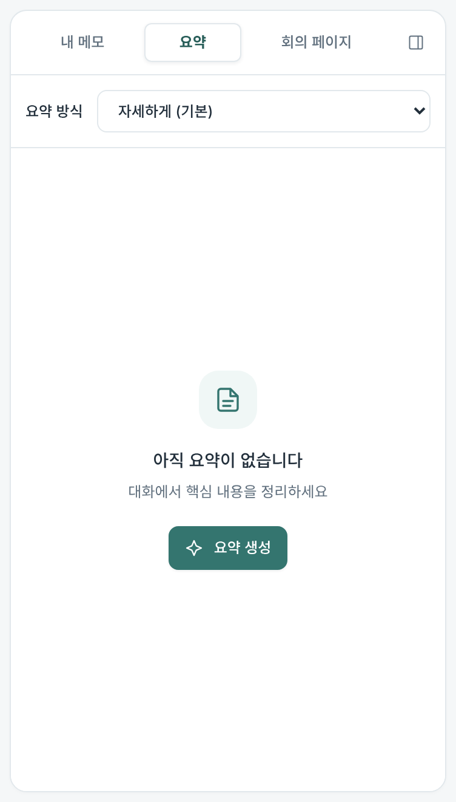
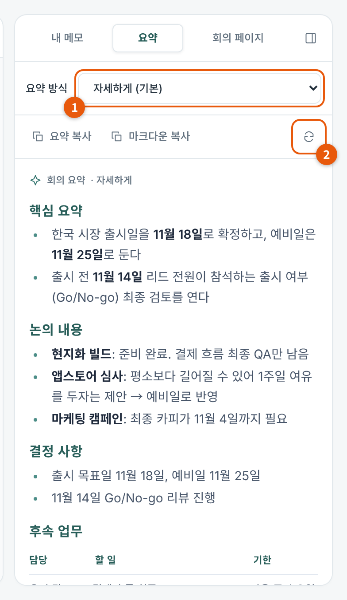
- 1요약 방식 — 어떤 형식으로 정리할지 고릅니다(아래 표). 회의마다 따로 저장됩니다.
- 2요약 새로 생성(↻) — 지금까지의 대화로 요약을 다시 만듭니다. 방식만 바꾸면 기존 요약은 그대로이니, 바꾼 뒤 꼭 눌러 주세요. 본문 위 "회의 요약 · ○○" 표시가 실제로 만든 방식입니다.
| 요약 방식 | 어떻게 정리하나요? | 이럴 때 좋아요 |
|---|---|---|
| 자세하게 기본 | 배경, 논의 과정, 결정과 후속 업무를 자세히 | 회의 전체를 꼼꼼히 남길 때 |
| Amazon 미팅록 | 결론 먼저(BLUF), 고객 요구, 논의, 결정, 액션 아이템, 리스크 | 고객·파트너 미팅을 실행 중심으로 |
| 의사결정 기록 | 결정마다 맥락, 검토한 대안, 선택 이유, 트레이드오프 | "왜 이렇게 정했는지"를 남길 때 |
| 공유·보고용 | 요약 → 배경 → 결정 사항 → 향후 일정의 서술형 보고문 | 회의에 없던 사람에게 보고할 때 |
| 내 양식 | 내가 만든 양식대로. 목록 맨 아래 내 양식 관리…로 양식 설정이 열립니다 | 팀 고유 형식이 있을 때 (만드는 법) |
요약 복사
- 요약 복사 — 제목·목록·표 같은 서식을 살려 복사합니다. Slack, 메일, 워드 문서에 붙여 넣기 좋습니다.
- 마크다운 복사 —
##,-같은 마크다운 원문으로 복사합니다. Notion, GitHub, Quip 등에 적합합니다. 작은 화면에서는 MD로 줄여 보입니다.
자동 요약
설정의 자동 요약 주기(기본 새 대화 10개마다)를 켜 두면 대화가 쌓일 때마다, 그리고 녹음을 일시정지할 때 요약이 갱신됩니다. 꺼 두어도 직접 생성과 회의 종료 시 요약은 됩니다. 회의에 고른 요약 방식은 수동·자동·종료 요약과 종료 메일에 모두 쓰입니다.
12회의 페이지 — 링크로 공유하기
오른쪽 회의 도구 → 회의 페이지
대화와 결정 사항을 읽기 좋은 한 장의 웹페이지로 정리해, 링크 하나로 회의에 없던 사람에게도 공유합니다. 회의를 종료하면 자동으로 만들어지고, 원할 때 직접 만들 수도 있습니다.
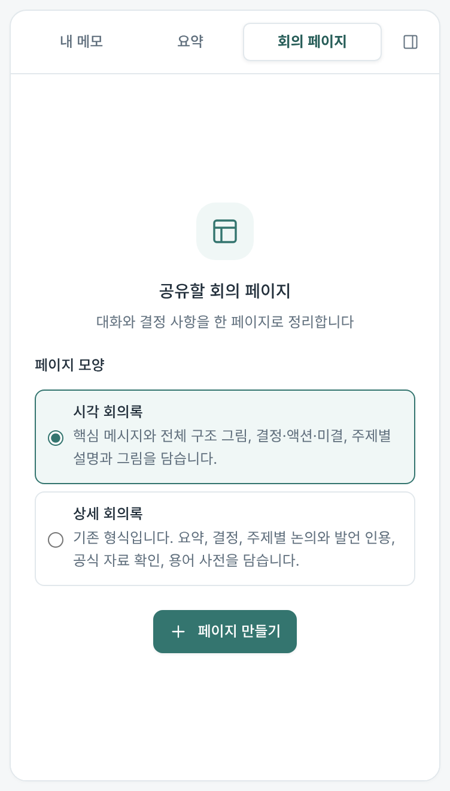
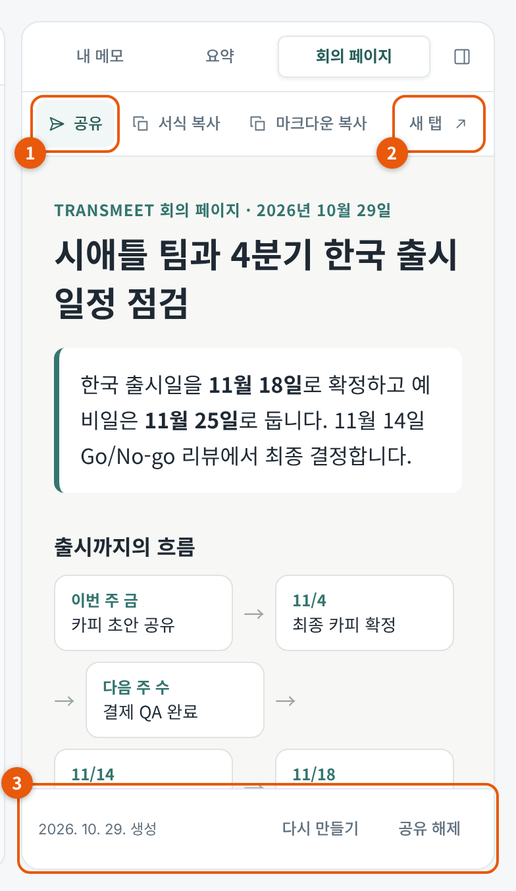
페이지 모양
| 모양 | 내용 |
|---|---|
| 시각 회의록 기본 | 핵심 메시지와 전체 구조 그림, 결정·액션·미결, 주제별 설명과 그림. 빠르게 훑기 좋습니다. |
| 상세 회의록 | 요약, 결정, 주제별 논의와 발언 인용, 공식 자료 확인, 용어 사전. 기록 보관용. |
만드는 데는 몇 분이 걸립니다. 진행 중에는 "페이지 생성 중"과 경과 시간이 표시되며, 창을 닫아도 생성은 계속됩니다. 나중에 그 회의를 다시 열어 회의 페이지 탭에서 결과를 확인하세요.
페이지 작업 버튼
- 1➤ 공유 — 지원되는 기기에서는 공유 창을 열고, 아니면 링크를 복사합니다("링크 복사됨"). 옆의 서식 복사 / 마크다운 복사는 페이지 본문을 복사합니다.
- 2새 탭 ↗ — 작은 미리보기 대신 브라우저 새 탭에서 크게 엽니다.
- 3하단 — 생성 날짜, 다시 만들기(최신 대화로 갱신하거나 모양 변경), 공유 해제(링크 삭제).
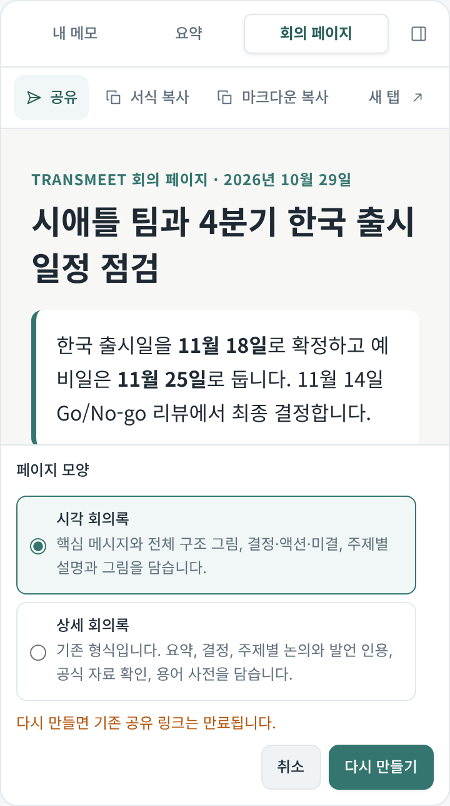
다시 만들기 · 공유 해제
다시 만들기를 누르면 모양을 다시 고르고, "다시 만들면 기존 공유 링크는 만료됩니다" 확인 후 한 번 더 다시 만들기를 누릅니다.
공유 해제는 확인 화면에서 한 번 더 누르면 링크가 삭제됩니다. 회의 기록 자체를 지우는 것은 아닙니다.
13회의 종료 · 다운로드 · 메일
■ 회의 종료는 녹음을 멈추는 것이 아니라 회의를 마무리하는 버튼입니다.
| 버튼 | 하는 일 | 이럴 때 |
|---|---|---|
| 일시정지 | 소리 입력만 잠시 멈춤. 같은 회의에서 녹음 재개 가능 | 휴식, 입력 장치 변경, 잠깐 멈춤 |
| 회의 종료 | 녹음 정리 · 최종 요약 · 회의 페이지 생성 · (켠 경우) 메일 발송 | 회의를 끝낼 때 |
- 회의 종료 누르기녹음 중이면 "녹음을 멈추고 회의를 종료할까요?"를 한 번 더 묻습니다. 녹음 중이 아니면 ⋯ 메뉴 안에 회의 종료가 있습니다.
- 녹음 파일 정리"녹음 파일 정리 중…"
- 최종 요약 생성"요약 만드는 중…" — 회의에 고른 요약 방식으로 만듭니다.
- 회의 페이지 자동 생성시각 회의록으로 만들어 회의 페이지 탭에 나타납니다.
- 메일 발송 (켠 경우)요약과 녹음 다운로드 링크를 로그인 이메일로 보냅니다. 그때 페이지가 준비돼 있으면 페이지 링크도 함께 넣습니다.
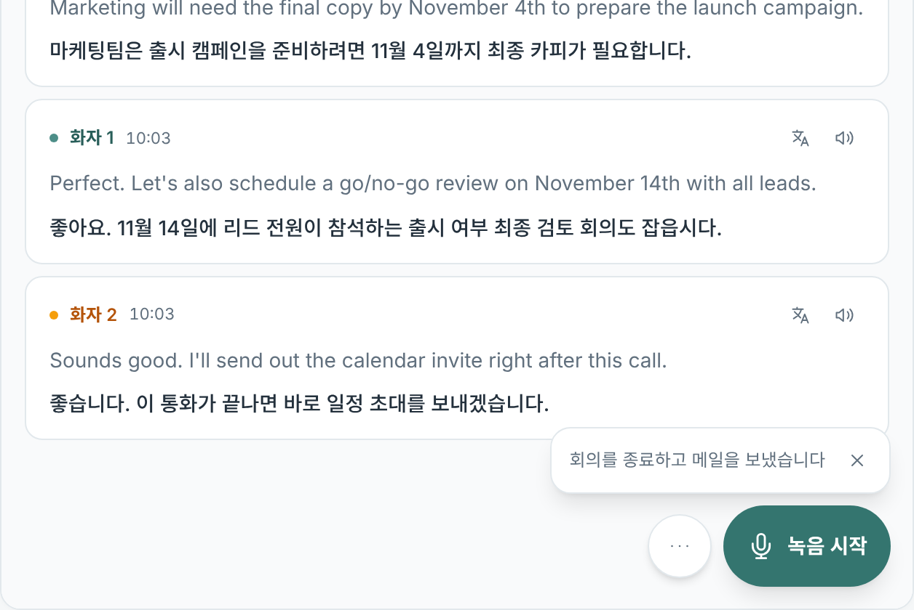
- 서버 연결이 준비되지 않으면 종료 버튼이 비활성화됩니다. "● 연결됨"이 될 때까지 기다리세요.
- 브라우저를 닫거나 로그아웃하는 것은 회의 종료가 아닙니다. 꼭 종료 버튼으로 마무리하세요.
- 종료한 회의도 다시 열어 녹음을 이어 가거나 요약·페이지를 다시 만들 수 있습니다.
- 페이지가 아직 생성 중이면 메일이 먼저 올 수 있습니다. 메일에 페이지 링크가 없으면 앱의 회의 페이지 탭을 확인하세요.
알림 메시지 뜻
14설정 — 음성 · 번역
헤더 ⚙️ 설정 → 음성 · 번역
탭은 음성 · 번역, 테마, 요약 양식, 계정 네 가지입니다. 이 탭의 설정은 고르는 즉시 적용되고 이 브라우저에 저장됩니다(저장 버튼 없음).
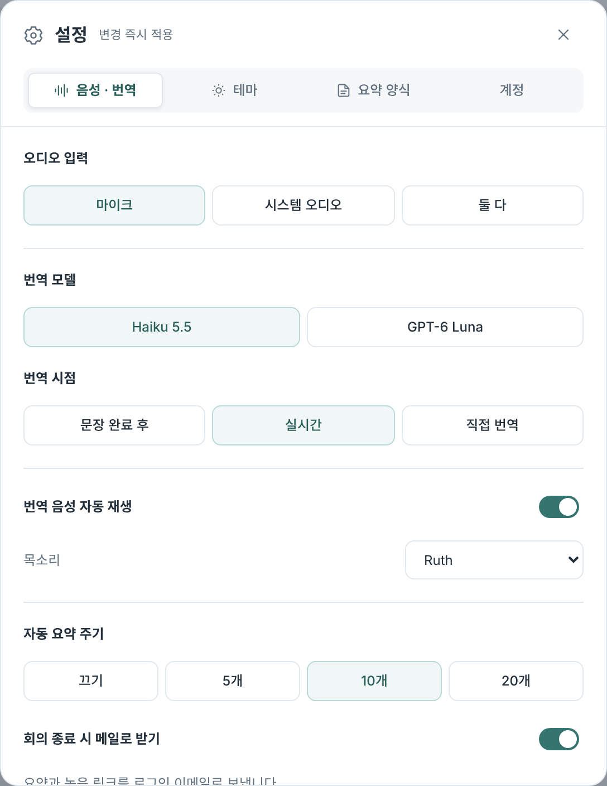
| 항목 | 선택지와 설명 |
|---|---|
| 오디오 입력 | 마이크시스템 오디오둘 다 어떤 소리를 받을지. 상황별 설명. 모바일 등 일부 브라우저는 마이크만 됩니다. |
| 번역 모델 | Haiku 5.5GPT-6 Luna 인식된 문장을 번역하는 AI. 음성 인식 엔진·요약과는 별개입니다. |
| 번역 시점 | 문장 완료 후실시간직접 번역 실시간: 말하는 도중에도 번역 갱신. 문장 완료 후: 문장이 끝나면 한 번 번역해 덜 흔들림. 직접 번역: 말풍선의 번역 버튼을 누를 때만. |
| 번역 음성 자동 재생 | 켜짐(기본) / 꺼짐 내 메모를 보낼 때 영어 음성을 자동 재생할지. 꺼도 카드에서 재생 가능. |
| 목소리 | RuthJoannaTiffany 음성을 읽어 줄 목소리. 한국어로 읽을 때는 Seoyeon. |
| 자동 요약 주기 | 끄기5개10개20개 시간이 아니라 새 대화 개수 기준으로 요약을 자동 갱신합니다. |
| 회의 종료 시 메일로 받기 | 꺼짐(기본) / 켜짐 — 인증 절차 |
| 고급 설정 | 맨 아래 고급 설정 ▾를 눌러 펼칩니다. 항목 설명 |
15설정 — 고급 설정
설정 → 음성 · 번역 → 맨 아래 고급 설정 ▾
대부분은 기본값으로 충분합니다. 선택한 엔진에 따라 보이는 항목이 달라지는 것은 정상입니다.
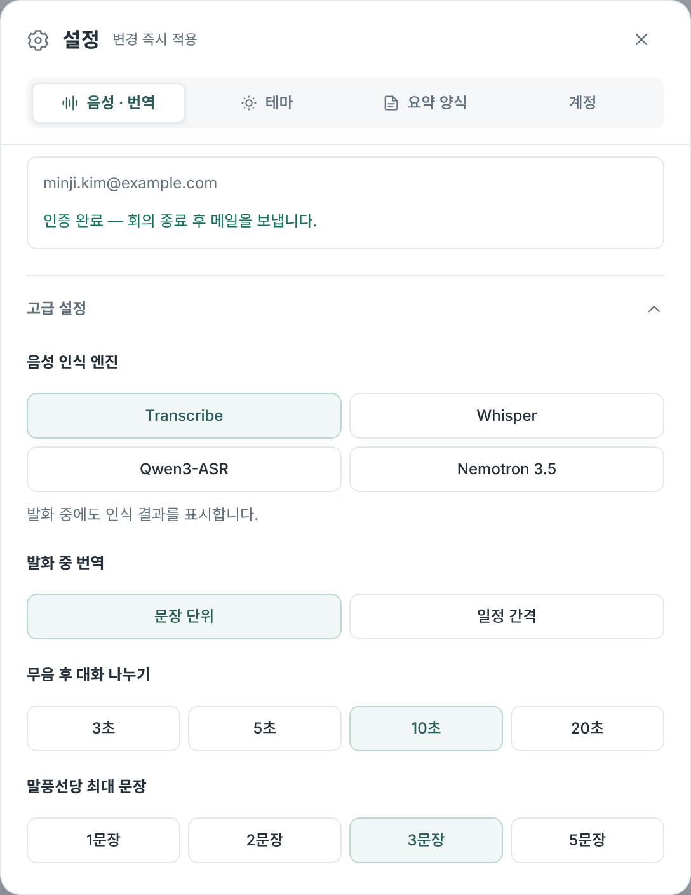
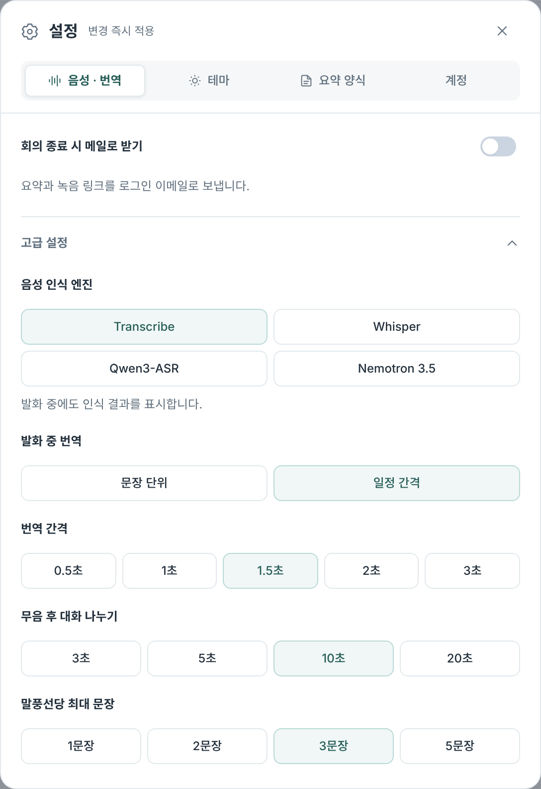
| 항목 | 선택지 | 설명 |
|---|---|---|
| 음성 인식 엔진 | TranscribeWhisperQwen3-ASRNemotron 3.5 | 소리를 글자로 바꾸는 엔진(번역 모델과는 다른 역할). Transcribe(권장): 바로 쓸 수 있고 말하는 중에도 결과가 보입니다. Whisper / Qwen3-ASR / Nemotron: GPU 모델로, 엔진 준비가 필요할 수 있습니다. 엔진 상태와 엔진 준비하기 버튼이 이 아래에 표시됩니다. |
| 음성 처리 구간 | 2초4초6초8초10초 | 소리를 몇 초씩 모아 인식할지. 구간 처리 엔진에서만 보이고, 스트리밍 엔진에서는 숨겨집니다. 짧으면 반응이 빠르고, 길면 문맥이 늘어 정확해집니다. |
| 발화 중 번역 | 문장 단위일정 간격 | 말이 끝나기 전 미리 보여 주는 번역을 언제 갱신할지. Transcribe에서 쓰며, 스트리밍 GPU 엔진은 확정된 발화만 번역하므로 숨겨집니다. |
| 번역 간격 | 0.5초1초1.5초2초3초 | "일정 간격"일 때만 보입니다. 짧으면 자주 바뀌고, 길면 덜 바뀝니다. |
| 무음 후 대화 나누기 | 3초5초10초20초 | 말이 이 시간 이상 끊기면 다음 말을 새 말풍선으로 나눕니다. |
| 말풍선당 최대 문장 | 1문장2문장3문장5문장 | 한 말풍선에 담을 최대 문장 수. 1이면 문장마다 새 말풍선이 생겨 읽기 쉽지만 목록이 길어집니다. |
16설정 — 회의 종료 메일
설정 → 음성 · 번역 → 회의 종료 시 메일로 받기
켜 두면 회의를 종료할 때 요약과 녹음 링크를 로그인 이메일로 보내 줍니다. 처음 한 번 인증이 필요하며, 이미 끝난 단계는 건너뜁니다.
- 스위치 켜기회의 종료 시 메일로 받기를 켭니다.
- (나오면) 1. 계정 이메일 확인메일로 받은 6자리 코드를 이메일 인증 코드에 넣고 코드 확인. 코드가 없거나 만료됐으면 인증 코드 다시 보내기.
- (나오면) 회의 메일 수신 인증메일함에 온 AWS 수신 인증 메일의 링크를 한 번 누릅니다. 이 화면으로 돌아오면 자동으로 확인하며, 그대로면 인증 상태 확인, 메일이 없으면 인증 메일 다시 보내기.
- 완료"인증 완료 — 회의 종료 후 메일을 보냅니다."가 보이면 끝입니다.
- 메일은 로그인 계정 이메일로만 갑니다. 다른 주소를 입력하는 기능은 없습니다.
- "인증 대기" 상태에서는 종료 메일을 보내지 않습니다. 수신을 그만하려면 스위치를 끄세요.
17설정 — 테마 · 글자 크기
설정 → 테마
화면의 색, 글꼴, 크기를 취향에 맞게 바꿉니다. 아래쪽 미리보기로 결과를 바로 확인할 수 있습니다.
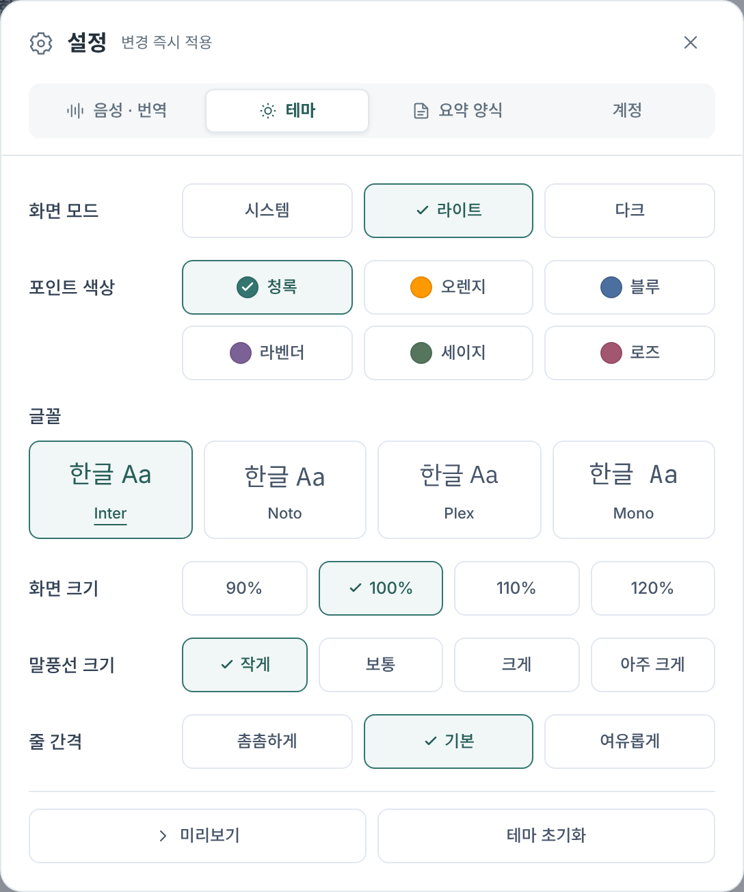
글자를 크게 보는 세 가지 방법
- 화면 전체 → 화면 크기 (90~120%)
- 대화 자막만 → 말풍선 크기 (대화 패널의 Aa와 같은 설정)
- 줄 사이 여백 → 줄 간격
밝기만 빠르게 바꾸려면 헤더의 🌙/☀️ 아이콘을 누르세요. 기기 설정을 따르게 하려면 화면 모드를 시스템으로 다시 고르면 됩니다.
| 항목 | 선택지 | 설명 |
|---|---|---|
| 화면 모드 | 시스템라이트다크 | 시스템은 PC의 다크 모드 설정을 따릅니다. |
| 포인트 색상 | 청록오렌지블루라벤더세이지로즈 | 버튼, 선택 표시, 요약 제목 등의 강조 색. |
| 글꼴 | InterNoto SansIBM Plex Sans KRJetBrains Mono | 화면 전체의 글꼴. |
| 화면 크기 | 90%100%110%120% | 전체 화면 배율. 큰 모니터나 발표할 때 키워 보세요. |
| 말풍선 크기 | 작게보통크게아주 크게 | 대화 원문·번역 글자 크기. |
| 줄 간격 | 촘촘하게기본여유롭게 | 본문 줄 간격. |
| 미리보기 | 펼치기 / 접기 | 현재 설정을 적용한 예제 말풍선. |
| 테마 초기화 | 버튼 | 화면 관련 설정만 기본으로 되돌립니다. 음성·번역 설정과 회의 기록은 그대로입니다. |
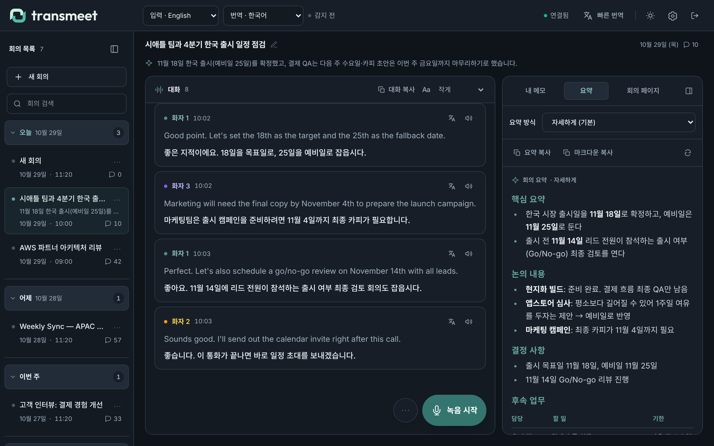
18설정 — 요약 양식 (내 양식)
설정 → 요약 양식 → 새 양식
팀에서 쓰는 회의록 형식을 저장해 두고 요약 방식에서 고를 수 있습니다. 이 탭은 다른 설정과 달리 저장을 눌러야 반영됩니다.
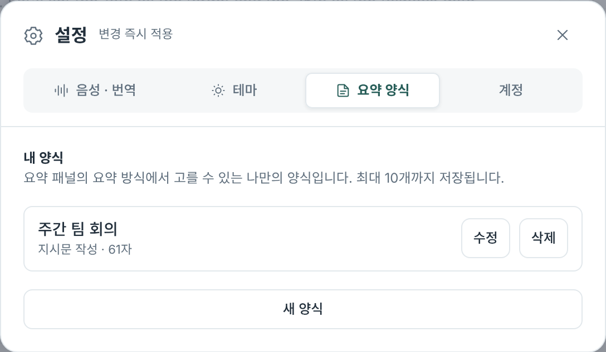
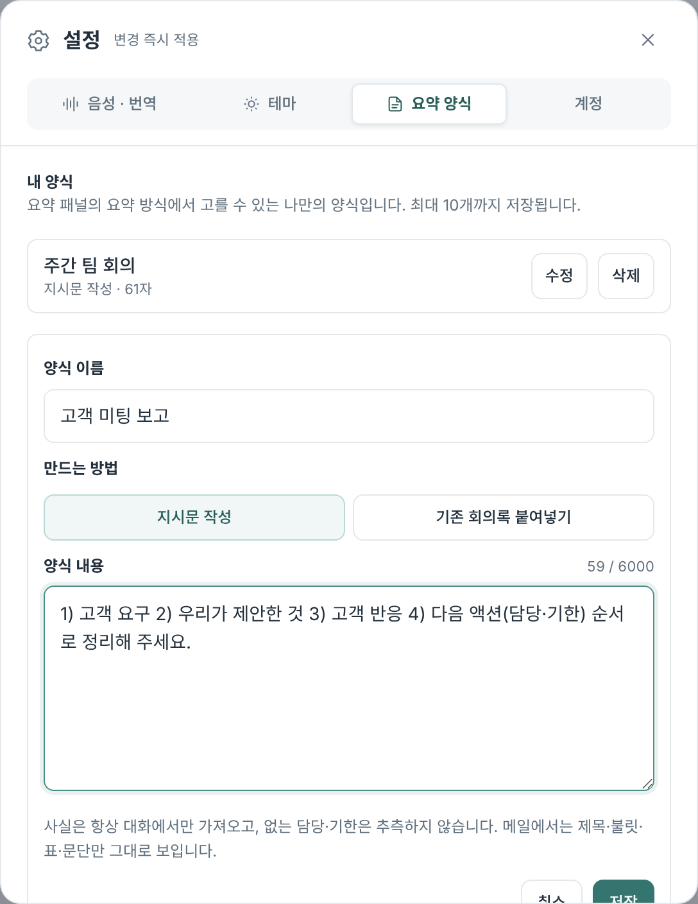
- 새 양식요약 양식 탭에서 새 양식. (요약 패널의 요약 방식 목록에서 내 양식 관리…를 골라도 열립니다.)
- 양식 이름나중에 알아볼 이름. 예) "주간 팀 회의", "고객 미팅 보고"
- 만드는 방법지시문 작성 — 원하는 구성을 말로 설명합니다. / 기존 회의록 붙여넣기 — 팀에서 쓰던 회의록을 넣으면 구조와 말투만 따르고 내용은 옮기지 않습니다.
- 양식 내용 입력 후 저장
- 사용요약 탭의 요약 방식 → 내 양식에서 고르고 ↻ 요약 새로 생성.
바로 써 볼 수 있는 지시문
다음 순서로 회의를 정리해 주세요. 1. 이번 주 진행 상황 2. 결정 사항과 결정 이유 3. 다음 할 일: 담당 / 기한 / 작업을 표로 정리 4. 아직 정하지 못한 내용 대화에 없는 담당자나 날짜는 추측하지 말고 '미정'으로 표시해 주세요.
| 저장 개수 | 이름 | 지시문 | 기존 회의록 |
|---|---|---|---|
| 최대 10개 | 최대 30자 | 최대 6,000자 | 최대 12,000자 |
- 요약 내용은 항상 실제 대화에서만 가져오며, 대화에 없는 담당자·기한은 추측해 채우지 않습니다.
- 양식을 수정해도 그 양식을 이미 고른 회의는 저장된 사본을 씁니다. 새 내용을 쓰려면 요약 패널의 최신 내용 적용 후 다시 생성하세요.
- 양식을 삭제해도 그 양식을 고른 회의는 저장된 사본으로 계속 요약됩니다.
- 메일에서는 제목·불릿·표·문단 서식만 그대로 보입니다. 회의 페이지 모양은 이 양식과 관계없습니다.
19설정 — 계정 · 비밀번호
설정 → 계정
계정 이메일을 인증하고, 로그인 비밀번호를 바꿉니다. 입력만으로는 바뀌지 않으니 버튼을 누르고 완료 메시지를 확인하세요.
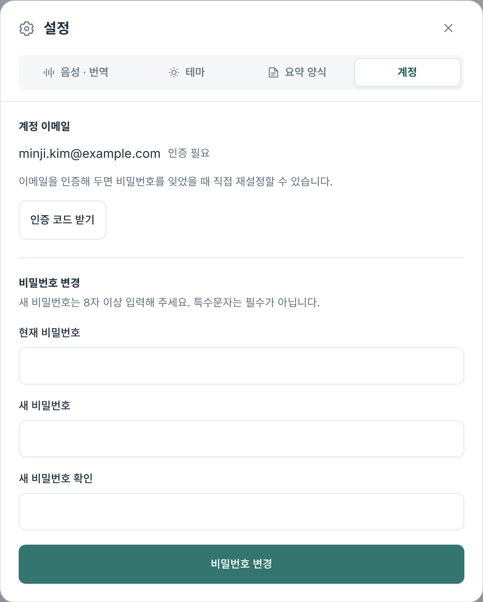
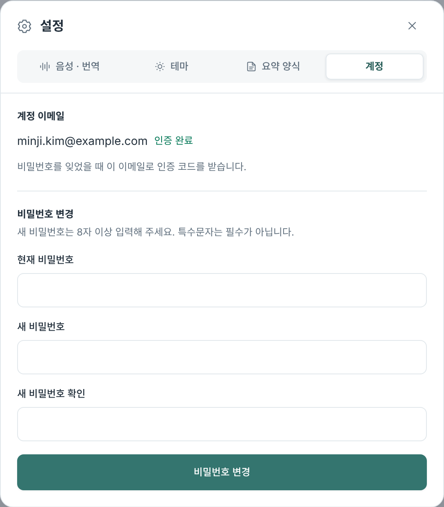
계정 이메일 인증하기
- 인증 코드 받기계정 이메일 옆에 "인증 필요"가 보이면 누릅니다.
- 6자리 코드 입력 → 이메일 인증"이메일 인증이 완료되었습니다" 안내를 확인합니다. 코드가 안 오거나 만료되면 코드 다시 받기.
계정 정보를 불러오지 못하면 계정 다시 확인을 누르세요. 이메일 주소 자체를 바꾸는 기능은 없습니다.
비밀번호 변경 (현재 비밀번호를 알 때)
- 현재 비밀번호 입력
- 새 비밀번호 · 새 비밀번호 확인같은 값을 두 번. 8~256자, 특수문자는 필수가 아닙니다.
- 비밀번호 변경완료 안내가 나오면 다음 로그인부터 새 비밀번호를 씁니다.
현재 비밀번호를 모르면 로그아웃 후 로그인 화면의 비밀번호 찾기를 이용하세요.
20모바일에서 쓰기
휴대폰 브라우저에서도 같은 주소로 쓸 수 있습니다. 화면이 좁아 패널이 탭으로 바뀝니다.
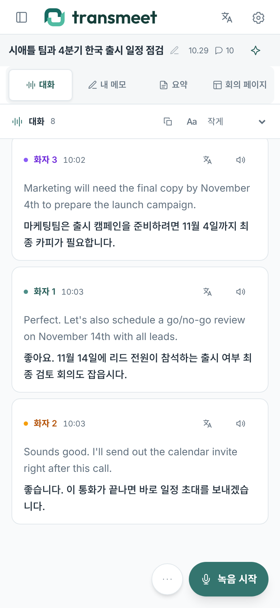
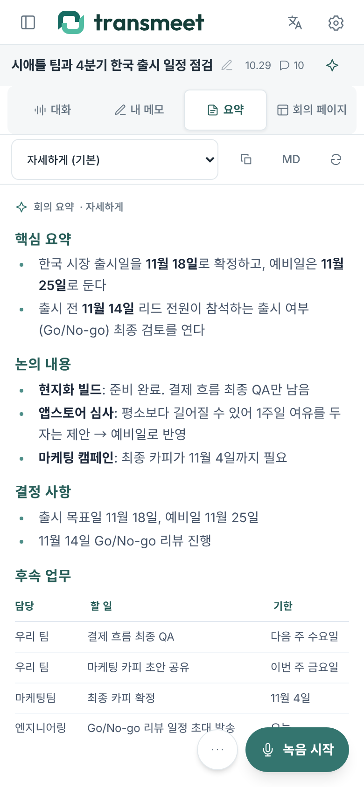
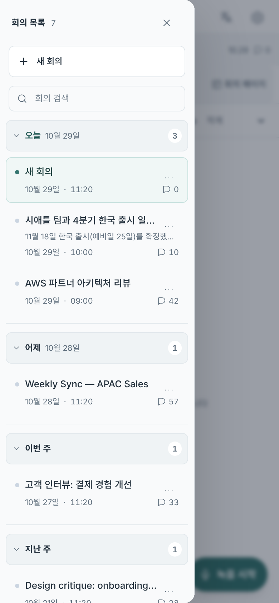
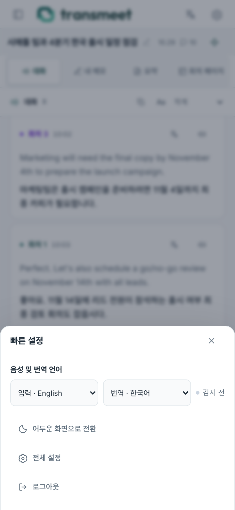
- 제목 오른쪽 ✨ 아이콘을 누르면 회의 한 줄 요약 전체 문장을 볼 수 있습니다.
- 탭에 작은 점이 찍혀 있으면 그 탭에 새 내용이 생겼다는 뜻입니다.
- 고급 설정·요약 양식·계정은 ⚙️ → 전체 설정에서 엽니다.
- 브라우저 메뉴의 홈 화면에 추가로 앱처럼 설치해 쓸 수 있습니다.
21문제 해결
증상을 눌러 확인 순서를 펼쳐 보세요.
녹음 시작을 눌렀는데 자막이 안 나와요
- 헤더에 ● 연결됨 또는 ● 녹음 중이 보이는지 확인합니다. 아니면 새로고침하세요.
- 주소창 왼쪽 자물쇠 아이콘에서 마이크 권한이 허용되어 있는지 확인합니다.
- 컴퓨터 소리를 받으려는데 오디오 입력이 마이크로 되어 있지 않은지, 화면 공유 창에서 오디오 공유를 켰는지 확인합니다.
- 입력 언어가 실제 말과 맞는지 확인하고 짧게 말해 봅니다.
- 버튼이 엔진 준비 / "엔진 준비 중"이면 기다리거나 Transcribe로 바꿉니다. 구간 처리 엔진은 몇 초 분량이 쌓인 뒤 결과가 나옵니다.
시스템 오디오 오류나 '오디오 공유' 안내가 나와요
일시정지 후 녹음 재개를 누르면서 공유할 화면·탭과 오디오 공유 옵션을 다시 고르세요. 고른 대상이 소리를 전달하지 않을 수 있습니다. 지원되지 않는 환경이면 마이크로 바꿉니다.
원문은 보이는데 번역이 없거나 방향이 이상해요
- 헤더의 입력과 번역 언어를 따로 확인하세요.
- 설정의 번역 시점이 직접 번역이면 말풍선의 文A 버튼을 눌러야 번역됩니다.
- 스트리밍 GPU 엔진은 원문을 먼저 보여 주고 문장이 확정된 뒤 번역합니다. 잠시 기다리세요.
- 설정을 바꿔도 이전 말풍선은 그대로입니다. 필요한 말풍선만 다시 번역하세요.
번역이 너무 자주 바뀌거나 말풍선이 너무 길어요
번역 시점을 문장 완료 후로, 고급 설정의 발화 중 번역을 문장 단위로 바꾸면 덜 흔들립니다. 말풍선이 길면 말풍선당 최대 문장을 줄이거나 무음 후 대화 나누기를 짧게 하세요.
영어 음성이 안 들리거나, 원치 않을 때 재생돼요
번역 음성 자동 재생이 켜져 있는지 확인하고, 기기 음량과 브라우저 탭 음소거도 확인하세요. 꺼 두어도 메모 카드의 스피커로 직접 재생할 수 있습니다. 화상회의 참석자에게 들리는지는 회의 앱의 오디오 공유 설정에 달려 있습니다.
요약 방식을 바꿨는데 내용이 그대로예요
방식 선택과 생성은 별개입니다. ↻ 요약 새로 생성을 누르세요. 내 양식을 수정했다면 최신 내용 적용도 확인하세요.
회의 종료 메일이 안 와요
- 회의 종료 시 메일로 받기가 켜져 있고 "인증 완료"인지 확인하세요. 인증하지 않은 주소로는 보내지 않습니다(가장 흔한 원인).
- 일시정지가 아니라 회의 종료를 눌렀는지 확인하세요.
- 받은편지함과 스팸함을 확인하세요.
- "메일 발송에 실패했습니다"가 떴다면 연결을 확인하고 회의 종료를 다시 누르세요.
"회의 종료" 버튼이 눌리지 않아요
서버 연결이 준비되지 않았거나 회의를 불러오는 중일 때는 비활성화됩니다. "● 연결됨"이 될 때까지 기다린 뒤 눌러 주세요.
페이지 생성이 오래 걸리거나 공유 링크가 안 열려요
대화량에 따라 몇 분 걸립니다. 오류가 나면 다시 시도를 누르고, 연결이 끊겼다면 회의를 다시 열어 확인하세요. 다시 만들기나 공유 해제를 했다면 이전 링크는 더 이상 열리지 않으니 공유로 새 링크를 보내세요.
복사나 녹음 다운로드가 실패해요
복사는 "준비 중…"이 끝난 뒤 다시 누르세요. 서식 붙여넣기가 이상하면 마크다운 복사를 쓰거나 본문을 직접 선택해 복사하세요. 다운로드는 서버 연결과 저장된 녹음이 필요하며, 실패하면 ⋯ → 녹음 다운로드를 다시 누르세요.
로그인이 안 되거나 비밀번호를 잊었어요
초대받은 이메일과 비밀번호를 확인하세요. 잊었다면 로그인 화면의 비밀번호 찾기로 재설정합니다. 이메일 인증을 안 했거나 초대가 만료됐다는 안내가 나오면 관리자에게 문의하세요.
설정이 안 보이거나 예전 설정이 사라졌어요
모바일은 ⚙️ → 전체 설정으로 들어갑니다. 고급 설정은 창 맨 아래에 있고, 일부 항목은 엔진에 따라 숨겨집니다. 음성·테마 설정과 빠른 번역 기록은 브라우저별 저장이라 다른 기기·브라우저나 사이트 데이터 삭제 후에는 다시 설정해야 합니다.
22버튼 · 용어 · 저장 위치
아이콘이 헷갈릴 때
| 모양 | 누르면 하는 일 | 위치 |
|---|---|---|
| ⚙️ 톱니바퀴 | 설정(음성·번역, 테마, 요약 양식, 계정) | 헤더 오른쪽 |
| 文A 언어 아이콘 | 헤더에서는 빠른 번역, 말풍선에서는 그 문장 (다시) 번역 | 헤더 / 각 말풍선 |
| 🔈 스피커 | 대화에서는 원문 읽기, 내 메모에서는 영어 번역 읽기 | 각 카드 오른쪽 |
| ➤ 종이비행기 | 메모 입력창에서는 보내기, 회의 페이지에서는 공유 | 내 메모 / 회의 페이지 |
| ⧉ 겹친 사각형 | 복사 (패널마다 복사하는 내용이 다름) | 대화 / 요약 / 페이지 |
| ↻ 원형 화살표 | 요약 새로 생성, 실패한 처리 다시 시도 | 요약 등 |
| ⋯ | 회의 목록에서는 회의 관리, 녹음 버튼 옆에서는 종료·다운로드 | 회의 목록 / 녹음 조작 |
| ◫ 패널 아이콘 | 목록·도구 접기와 펼치기 (모바일은 회의 목록 열기) | 패널 위쪽 |
| 🌙 / ☀️ | 어두운 화면 / 밝은 화면 전환 | 헤더 또는 모바일 빠른 설정 |
| ✨ 반짝이 | 회의 한 줄 요약 | 제목 아래 (모바일은 제목 옆) |
| ✕ | 창·알림 닫기, 검색어 지우기 | 창 오른쪽 위 / 검색창 |
알아 두면 쉬운 용어
키보드로 빠르게
| 키 | 동작 |
|---|---|
| Enter | 내 메모 보내기 / 빠른 번역 실행 / 제목 편집 저장 |
| Shift+Enter | 내 메모·빠른 번역 입력창에서 줄바꿈 |
| Esc | 설정·빠른 번역 창, 열린 메뉴 닫기 / 제목 편집 취소 |
| ← → | 탭에 초점이 있을 때 탭 전환, 패널 경계에서는 너비 조절 |
| / | (이 가이드에서) 검색창으로 이동 — 앱의 단축키는 아닙니다 |
어디에 저장되나요?
| 내용 | 저장 위치 | 알아 둘 점 |
|---|---|---|
| 회의 기록 · 대화 · 메모 · 요약 | 계정 | 어느 기기에서 로그인해도 같습니다. |
| 회의별 요약 방식 · 내 양식 | 계정 | 회의에서 고른 내 양식은 사본을 따로 보관합니다. |
| 녹음 | 계정 | ⋯ → 녹음 다운로드로 MP3를 받습니다. |
| 음성·번역·테마 설정, 패널 너비 | 이 브라우저 | 다른 브라우저나 사이트 데이터 삭제 후에는 다시 설정. |
| 빠른 번역 방향 · 최근 번역 | 이 브라우저 | 최근 번역은 최대 20개. |
| 회의 페이지 | 공개 링크 | 링크를 아는 누구나 열 수 있음. 다시 만들기·공유 해제 시 기존 링크 만료. |
2026년 10월 29일 앱 기준. 스크린샷의 회의·계정·번역 내용은 설명용 예제입니다. 기기·브라우저·서비스 구성에 따라 일부 버튼과 옵션이 다를 수 있습니다.